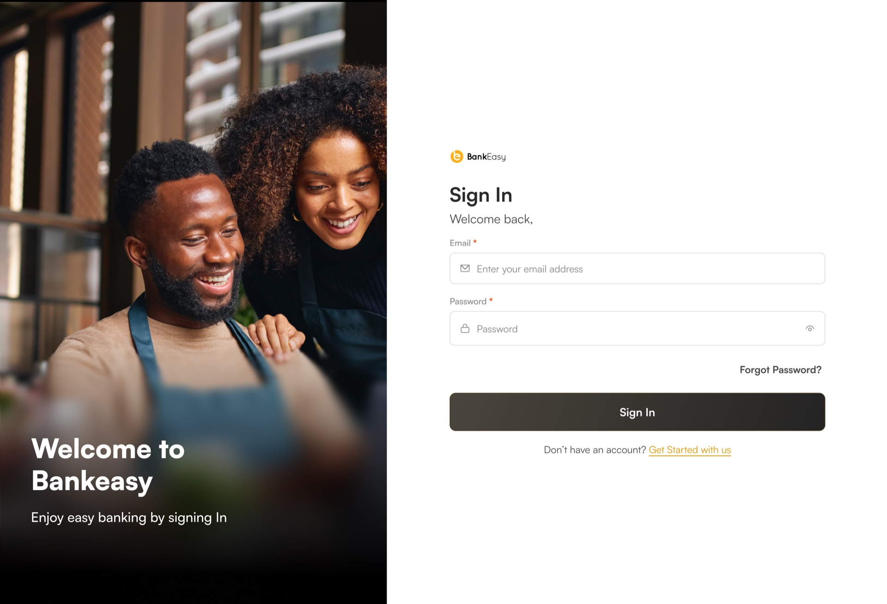
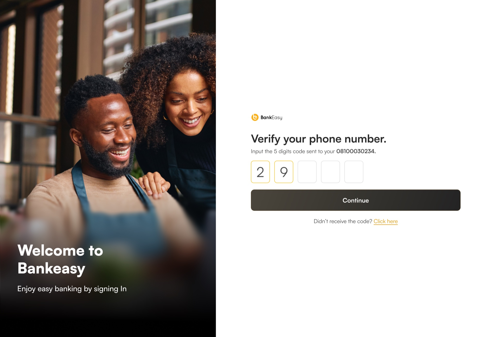
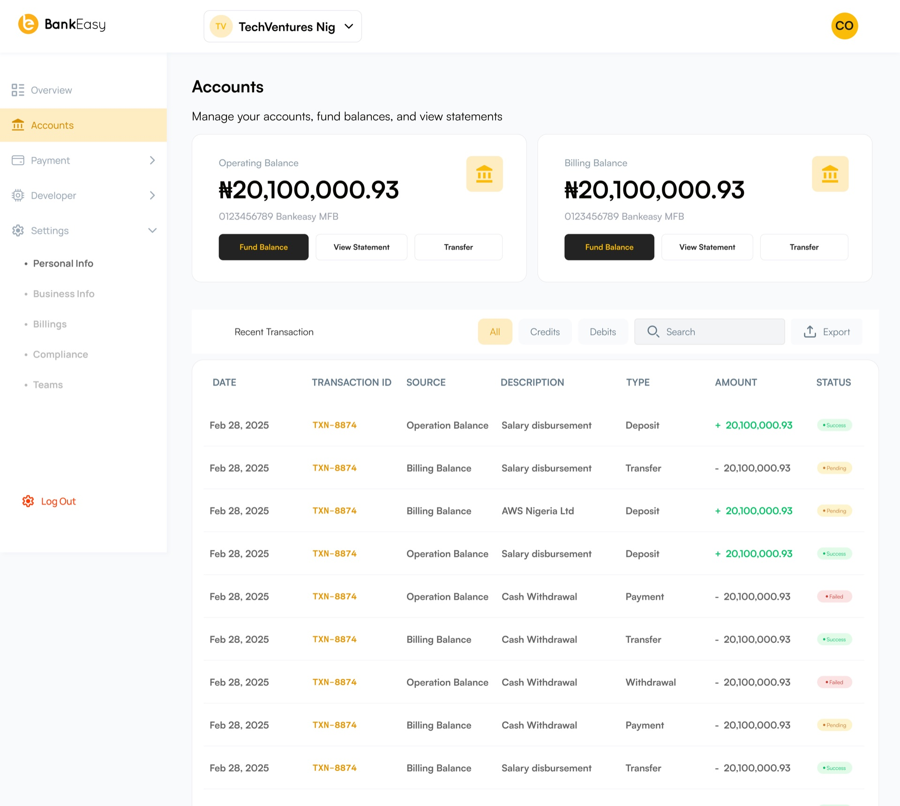
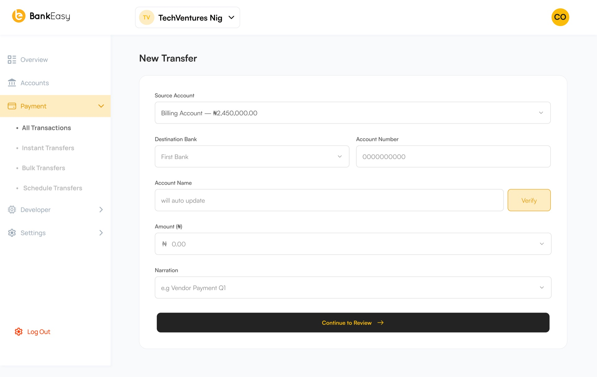
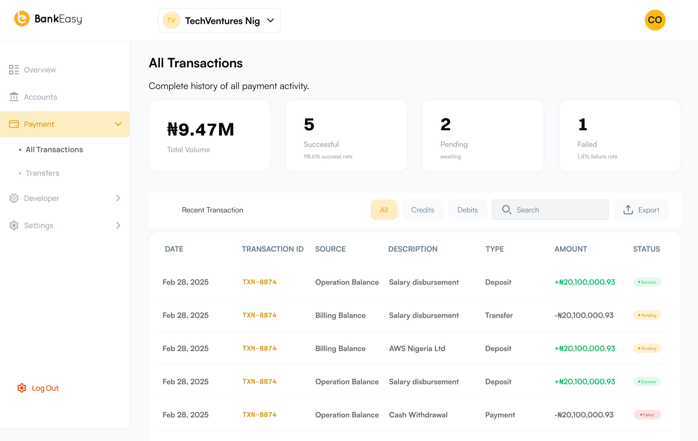
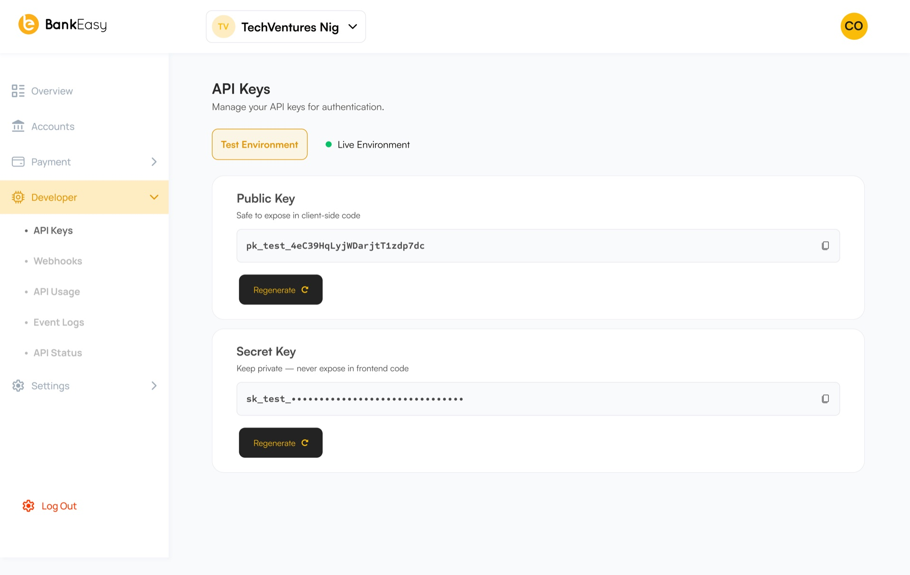
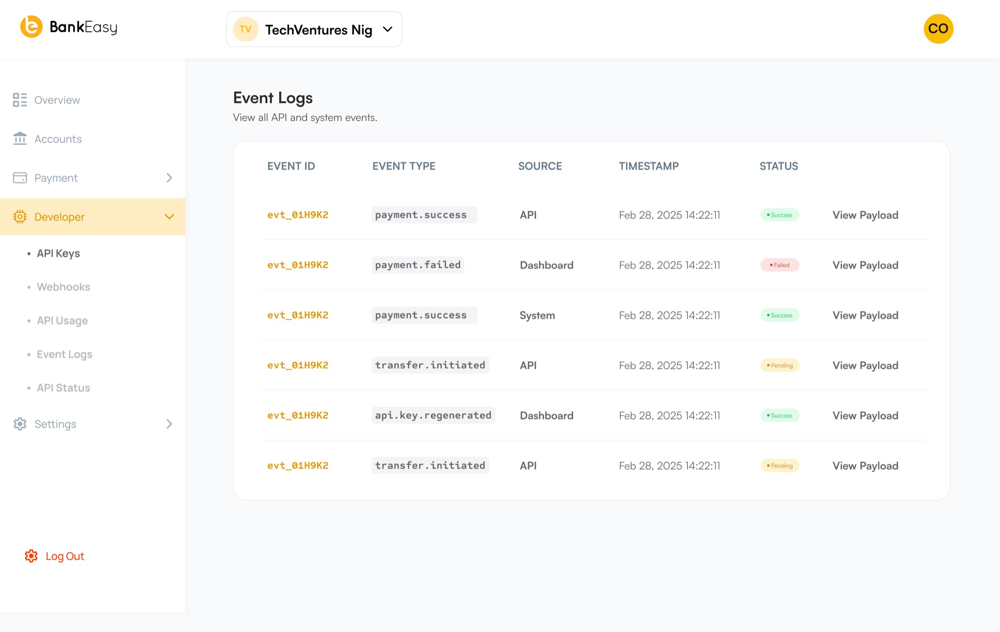

Overview
Bankeasy set out to make everyday banking legible to people who had never trusted a bank statement to explain itself. I led product design for the app, from early research through to launch.
The team's founding insight was simple: most digital banking apps are digitized versions of paper statements, built for auditors, not for the person deciding whether they can afford dinner out tonight.
The Challenge
Bankeasy needed to launch a full consumer banking app — accounts, transfers, savings, spending insights — in a market where trust was the scarcest resource, and where competitors had spent years training users to expect confusing fee structures and jargon-heavy statements.
Context
I joined during the pre-seed research phase, working alongside two engineers and a founder who had previously built compliance software — someone who deeply understood banking rules, but needed a partner who understood the person on the other end of the screen.
Understanding the Users
We interviewed 26 people who had recently switched banks or opened a first account, focusing on the moments they felt confused or anxious. The clearest pattern: people didn't distrust banks because of what banks did, but because of how illegibly banks explained what they did.
- Transaction categories were often wrong or unhelpfully generic ("Miscellaneous").
- Fees appeared without warning, even when technically disclosed somewhere in the terms.
- Balance and available balance were conflated, causing real anxiety around overdrafts.
Authentication & Onboarding
The onboarding experience prioritizes clarity at every step, using friction-reduced phone verification and transparent permission requests.

Sign In & Biometric Authentication

Phone Verification & Security Setup
User Flows & Explanations
The transfer flow became the flagship example: before confirming any transfer, Bankeasy shows the resulting available balance in plain terms, with a one-line explanation if the transfer would trigger a fee or bring the balance close to zero.

Account Overview — Available vs Actual Balance

Transfer Confirmation with Fee Disclosures
Design Decisions
- Plain language by default, detail on demand. Every screen led with a sentence a non-banker would use, with technical detail available behind a single tap.
- Available balance, always in view. We removed ambiguity between balance and available balance by never showing one without the other.
- Warnings before consequences, not after. Fee and overdraft warnings appear before the action is confirmed, never as an after-the-fact notification.
High Fidelity Designs
The visual language stayed deliberately calm — a restrained palette, generous type, and color used only to carry meaning (a fee warning, a completed transfer) rather than for decoration.

Full Transaction History Feed & Categorized Activity
Developer Portal & API Management
For corporate accounts and partners, we designed a companion developer portal with API status monitoring, test key management, and real-time webhook event logs.

Developer Portal — API Keys & Testing Controls

Developer Portal — Real-Time Event Logs
Testing
Usability testing with 18 participants showed a marked increase in confidence completing transfers without hesitation, and, notably, several participants read the plain-language confirmation aloud unprompted — a sign the copy was doing real work.
Impact
Reflection
Working this closely with a compliance-minded founder taught me that clarity and correctness aren't opposed — but they do require design to sit at the table early, translating regulatory precision into something a person can act on without anxiety.
Lessons Learned
- Trust is built or lost in small, specific moments, not through a brand's overall tone.
- Plain language is a design decision with measurable product outcomes, not a copywriting afterthought.
- Warning people before a consequence is almost always more valuable than explaining it afterward.